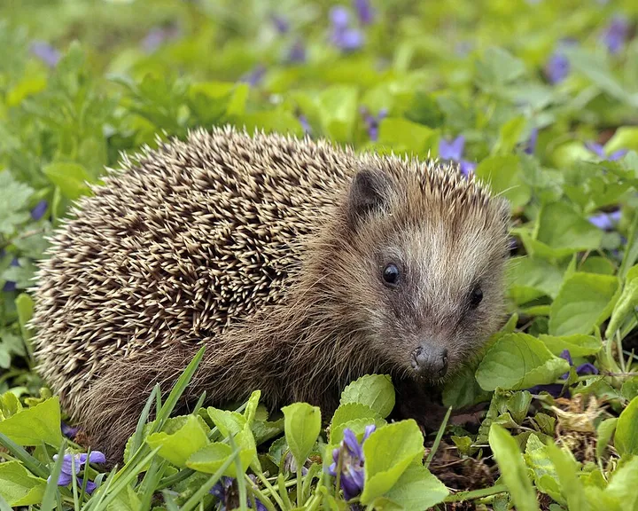
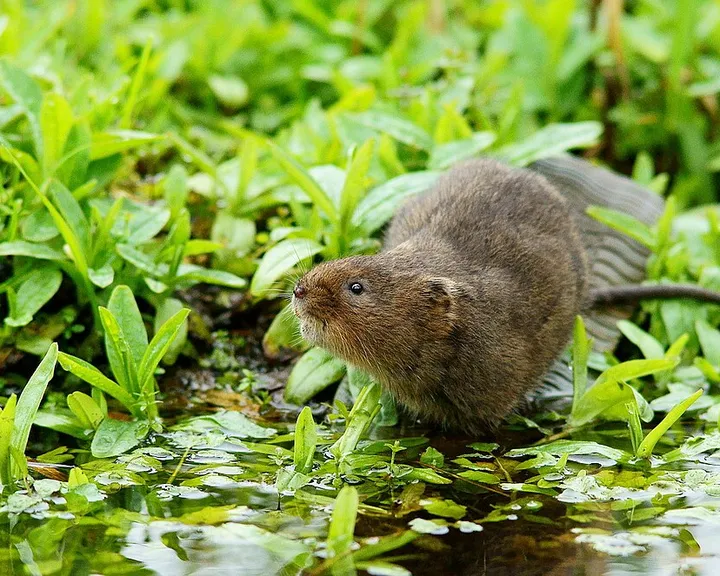
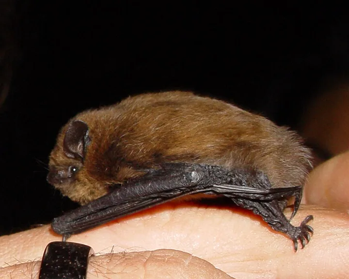
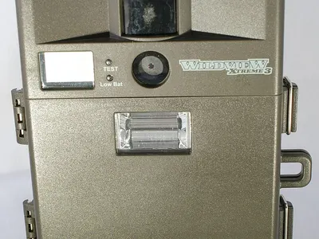
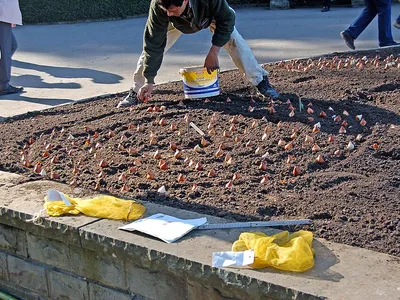

Säugetier im Garten
Wer nachts schnauft, ist ein Igel. Hügel im Rasen stammen vom Maulwurf oder der Schermaus. Am Tag klettert das Eichhörnchen, nachts auf dem Dach poltert der Steinmarder oder der Siebenschläfer. Rotbraun mit buschiger Rute ist der Fuchs, mit Gesichtsmaske der Waschbär.
-

IgelStacheln, nachts unterwegsFotonachweis
Foto: Michael Gäbler (Quelle, öffnet in neuem Fenster), CC BY-SA 3.0 (Lizenztext, öffnet in neuem Fenster), Wikimedia Commons -
 MaulwurfHohe, runde Erdhügel
MaulwurfHohe, runde Erdhügel Fotonachweis
Foto: Christoph Moning (Quelle, öffnet in neuem Fenster), CC BY 4.0 (Lizenztext, öffnet in neuem Fenster), Wikimedia Commons -

SchermausFlache Hügel, Pflanzen welkenFotonachweis
Foto: Peter Trimming (Quelle, öffnet in neuem Fenster), CC BY 2.0 (Lizenztext, öffnet in neuem Fenster), Wikimedia Commons -
 EichhörnchenBuschiger Schwanz, klettert am Tag
EichhörnchenBuschiger Schwanz, klettert am Tag Fotonachweis
Foto: Peter Trimming (Quelle, öffnet in neuem Fenster), CC BY 2.0 (Lizenztext, öffnet in neuem Fenster), Wikimedia Commons -
 SteinmarderWeißer, gegabelter Kehlfleck, nachts
SteinmarderWeißer, gegabelter Kehlfleck, nachts Fotonachweis
Foto: Franco Atirador (Quelle, öffnet in neuem Fenster), CC BY-SA 3.0 (Lizenztext, öffnet in neuem Fenster), Wikimedia Commons -
 RotfuchsRotbraun, buschige Rute mit weißer Spitze
RotfuchsRotbraun, buschige Rute mit weißer Spitze Fotonachweis
Foto: Charles J. Sharp (Quelle, öffnet in neuem Fenster), CC BY-SA 4.0 (Lizenztext, öffnet in neuem Fenster), Wikimedia Commons -
 WaschbärSchwarze Gesichtsmaske, geringelter Schwanz
WaschbärSchwarze Gesichtsmaske, geringelter Schwanz Fotonachweis
Foto: Rhododendrites (Quelle, öffnet in neuem Fenster), CC BY-SA 4.0 (Lizenztext, öffnet in neuem Fenster), Wikimedia Commons -
 SiebenschläferGrau, große schwarze Augen, nachts im Obstbaum
SiebenschläferGrau, große schwarze Augen, nachts im Obstbaum Fotonachweis
Foto: Azay (Quelle, öffnet in neuem Fenster), CC BY-SA 3.0 (Lizenztext, öffnet in neuem Fenster), Wikimedia Commons -

ZwergfledermausFliegt in der Dämmerung im ZickzackFotonachweis
Foto: Mnolf (Quelle, öffnet in neuem Fenster), CC BY-SA 2.0 (Lizenztext, öffnet in neuem Fenster), Wikimedia Commons
Andere Merkmale
Zum Bestimmen im Garten
Alle Ausrüstungstipps ansehen- Beispielfoto · Foto: Hustvedt, CC BY-SA 3.0 – Lizenzangaben im Bildnachweis

Mein TippWildkamera für den Garten
Auswahl bei Amazon
Zeigt dir, wer nachts unterwegs ist: Igel, Marder, Fuchs oder Eichhörnchen. Achte auf unsichtbares Infrarot (No-Glow).
Bei Amazon ansehen Wildkamera für den Garten (Werbelink, öffnet in neuem Fenster) - Beispielfoto · Foto: U.S. Fish and Wildlife Service Southeast Region, Public domain – Lizenzangaben im Bildnachweis

Bestimmungsbuch Tiere im Garten
Auswahl bei Amazon
Ein handliches Buch mit Fotos hilft, auch seltenere Besucher sicher zu erkennen.
Bei Amazon ansehen Bestimmungsbuch Tiere im Garten (Werbelink, öffnet in neuem Fenster) - Beispielfoto · Foto: Gerhard Giebener, CC BY 2.0 – Lizenzangaben im Bildnachweis

Wühlmauskorb aus Draht
Auswahl bei Amazon
Schützt Blumenzwiebeln und Wurzeln junger Obstbäume vor der Schermaus.
Bei Amazon ansehen Wühlmauskorb aus Draht (Werbelink, öffnet in neuem Fenster)
Werbelink: Wenn du über diesen Link etwas kaufst, erhält der Gartentierkompass eine kleine Provision von Amazon. Für dich ändert sich am Preis nichts. Als Amazon-Partner verdiene ich an qualifizierten Verkäufen.